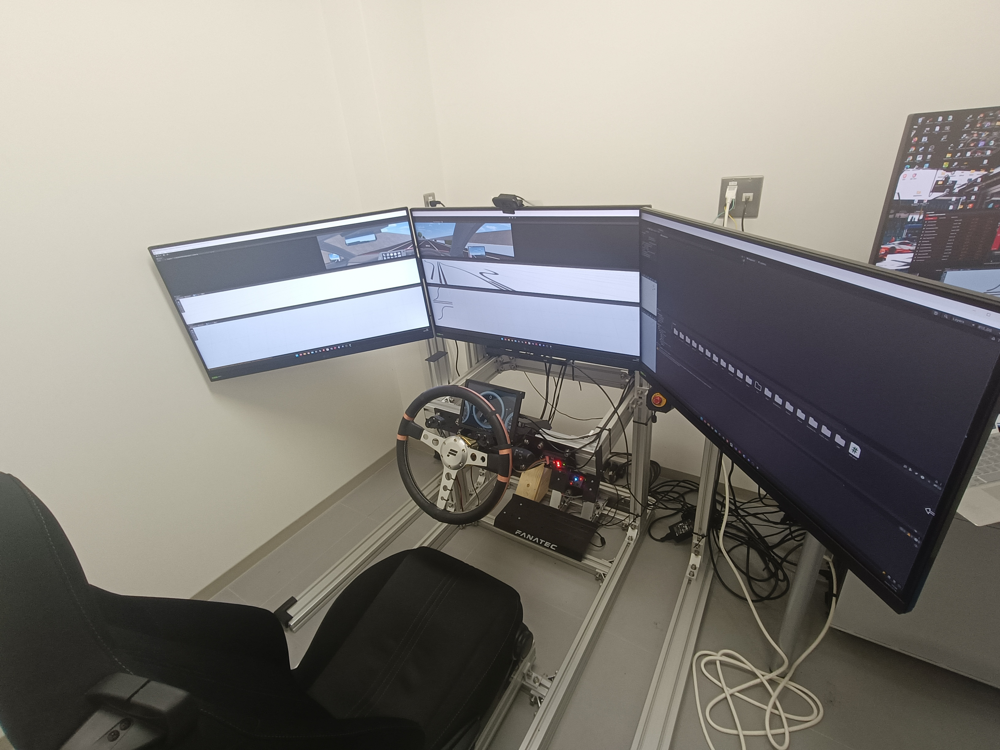
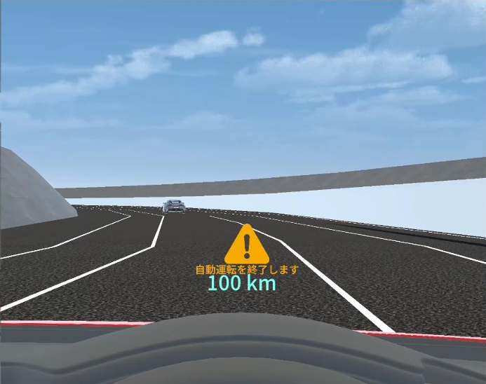

💻 Software & Research · Unity / Unreal / Kotlin
中山 裕晴 (Yusei Nakayama)
九州大学大学院 システム情報科学府 情報理工学専攻（修士1年）
制作したアプリケーションや研究等をまとめています。
一部の作品は画像クリックで詳細ページへ移動できます。
Works
Research
自動運転システムにおける権限移譲時の情報提示手法の検討
自動運転システムが限界を迎えた際に、運転権限を人間ドライバへ安全かつ確実に移譲するための
HMI（Human–Machine Interface）設計について研究しています。
Unityベースのドライビングシミュレータを用いて、提示手法の違いが運転者の反応や操作精度に与える影響を分析しています。


学会発表
Tech Stack
- C# — Unityによる2D/3Dゲーム開発、ドライビングシミュレータ開発
- C++ — Unreal Engineによる3Dゲーム開発
- Kotlin — Android Studioによるモバイルアプリ開発
- Java — Androidアプリ開発（Kotlin導入前に使用）
- JavaScript — ポートフォリオサイト構築
- HTML / CSS — Webサイト構築・デザイン
- Python — データ分析（バイト業務）・ツール開発、RaspberryPi、授業での使用など
- R — 実験データの統計分析
- C — 授業、arduino等
- MATLAB — 授業内での数値計算・シミュレーション
Contact
GitHub / X(Twitter) / Email